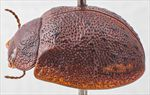
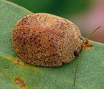
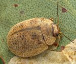
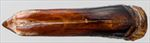
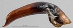
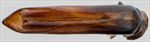
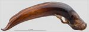
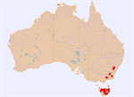
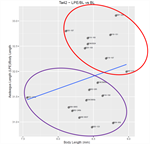

Click on images to enlarge
{kind=link}

Male, Hobart, Tasmania
{kind=link}

Male, Frankford, Tasmania
{kind=link}

Male, Jerrong, New South Wales
{kind=link}

Aedeagus, dorsal view (Omeo, Victoria)
{kind=link}

Aedeagus, lateral view (Omeo, Victoria)
{kind=link}

Aedeagus, dorsal view (Moina, Tasmania)
{kind=link}

Aedeagus, lateral view (Moina, Tasmania)
{kind=link}

{kind=link}

Plot of LPE vs BL, with two clusters of specimens indicated
Name
Trachymela papulosa (Erichson)
Reference specimen
1997-526, Westerway, Tasmania.
Adult Description
Length: ♂ 7.5–9.0 mm (n=36), ♀ 8.5–9.9 mm (n=21).
Colouration:
- Head: Light- to mid-brown, rarely with vague darker colouration, rear of head black (visible only with head considerably extended), mandibles with black tips; antennomeres 1–3 straw-brown, 4–11 grading slightly darker to much darker, rarely black towards outer segments, individual antennomeres usually unicolorous, rarely with proximal extreme slightly paler.
- Pronotum: Brown, concolorous with head, sometimes with two small darker brown maculae on disc, on either side of centre, sometimes with a vaguely defined darker region behind each eye.
- Scutellum: Brown, concolorous with pronotum, usually broadly bordered in a fractionally darker shade.
- Elytra: Brown, concolorous with pronotum, with a scatter of small, dark-brown verrucae over posterior half of disc (Tasmanian specimens) or more widely distributed over disc, even as far forward as anterior margin (mainland specimens), the verrucae may be distributed with no discernable pattern or they may roughly align in longitudinal rows, punctures slightly darker brown, humeral callus concolorous with surrounds or (rarely) fractionally darker.
- Venter & Legs: Mid-brown, with edges of ventrites and sometimes thoracic ventrites slightly (rarely considerably) darker, legs concolorous, inside surface of elytral epipleura brown.
- Cuticular Wax: Light-brown in colour and relatively evenly and quite densely distributed over dorsal surface without concealing the verrucae.
Morphology:
- Head: Evenly rounded, greatest height just in front of centre of elytra, often (especially males) prominently explanate. Punctures moderately sized (pd ≈ 2–2.5 × ef) and quite evenly and densely distributed, a small unpunctured space is often present at rear of head between eyes. Antennae moderately long (AL/BL: ♂ 42–46%, ♀ 38–40%), filiform.
- Pronotum: Almost evenly curved transversely over disc with lateral margins noticeably explanate, foveal depression shallow but well-developed, a central elevation usually absent, puncturation clearly and deeply impressed and noticeably coarser than that on head, punctures relatively evenly distributed and moderately dense in discal area, interstices quite elevated producing a rough surface, punctures becoming much coarser towards lateral margins though surface is only slightly rougher. Front margins join lateral margins in a smoothly rounded right-angle, with lateral margin initially roughly straight for a considerable distance before curving smoothly and gradually towards rear margin.
- Scutellum: Unpunctured, the flat rough-surfaced lateral borders contrast with the domed and smooth central region.
- Elytra: Surface evenly curved with a very shallow antero-median depression, punctures distinct and relatively evenly distributed even towards apex, with much smaller punctures scattered sparsely on the interstices, interstices form a prominent network of elevated ridges around the punctures, small round but quite prominent verrucae are present over at least posterior third of disc (less numerous or rarely completely absent in Tasmanian specimens) but may extend almost to anterior edge (mainland specimens), suture carinate close to apex, surface discontinuous under humeral callus. Vertical extension of epipleura large (HCE/PW = 0.37–0.41).
- Venter: Prosternal process narrow anteriorly, then either gradually widening or parallel sided for a distance before widening, closed anteriorly, short setae present sparsely over prosternal process and mesoventrite, a single seta on anterior and median trochanter; posterior trochanter with a blunt spine-like projection, front edge of metaventrite beveled, truncate; inner edge of posterior of epipleurae with a row of short setae.
Male Genitalia (Aedeagus):
- Dimensions: Moderately long (LPE/BL = 30–33%).
- Dorsal view: Shaft narrowing slightly and briefly from base then almost parallel sided for much of length before broadening fractionally to the widest point about 20% from apex, from where the sides converge towards apex in a smooth and very gradual arc, dorsal surface smoothly curved with a relatively long dorso-median channel, dorsolateral channels long to produce very long dorsal ostial processes, tip protruding moderately, ostial opening large.
- Lateral view: Shaft almost evenly and almost imperceptibly curved throughout its length, curvature increasing very slightly near apex (more markedly in central New South Wales specimens), thinning towards apex only over final 10% of length, tip prominent and strongly deflexed.
Immature Stages
- Eggs: See de Little (1979).
- Larvae: See de Little (1979).
Similar species
- Ta168: Superficially almost identical in appearance but lacks the posterior trochanter spur and has a differently shaped apical area on aedeagus.
Notes
- Taxonomy: The identification of Ta42 as Trachymela papulosa (Erichson), a species described from Tasmania, is by comparison with specimens labelled as such in the Natural History Museum, London (BMNH) (part of the Baly collection), one of which has had the aedeagus extracted. The identification is supported by comparison with the description of de Little (1979), where the species has the code number “Ta1”. A specimen of what is clearly Ta42 (the aedeagus has been extracted) in the Royal Belgian Institute of Natural Sciences, Brussels (RBINS) is labelled as “P. punctata loc Marsh. Tasmania”, presumably by Chapuis. If that identification is correct (and Daccordi seems to agree), then papulosa would be a junior synonym of punctata. See further discussion of this issue in the notes for punctata.
- Host Associations: Ta42 has been recorded from a number of smooth-barked Eucalyptus species, including E. viminalis and E. gunni (both of which are in Section Maidenaria of the genus). De Little (1979) records the Maidenaria specie E. ovata (n=8), E. gunni (n=5), E. dalrympleana (n=2) and E. coccifera (n=1), as well as the monocalypt species E. pulchella (n=4), E. amygdalina (n=1) and E. obliqua (n=1). There are also 2 specimens collected by P.G. Kelly in Victoria from E. pauciflora.
- Morphological Variation: The length of the aedeagus (LPE) does not show the usual roughly linear inverse relationship with body size in this species that is typical in most Trachymela species, nor does there seem to be a relationship with the region from where the specimens were collected. A number of specimens from Tasmania show clear differences in several characters from most other Tasmanian (and mainland) specimens. They have an aedeagus that is about 4% longer than the average for this species, with its widest point further back from the apex, giving it a more needle-like shape. These comprise the species circled in red in the LPE/BL graph (see figure above), and taken on their own, show the inverse linear relationship. The remaining specimens would form a similar relationship, with a similar slope as that of the red group but with values about 4% lower for the same body size. Most of the specimens in the red group show slight morphological differences from the other group, for example, they also tend to have more verrucae on the elytra in the area between the scutellum, humeral callus and antero-median depression. However, a few specimens (for example, [1998-0037]) are intermediate in these characters. There is not enough data to make sense of these differences in terms of host utilisation.
Copyright © 2026. All rights reserved.